O Brasil em Modernização
Desde a independência, o Brasil passou por um contínuo processo de modernização, mais evidente nos grandes centros urbanos, como o Rio de Janeiro da Belle-Époque, onde se alargaram ruas, removeram cortiços e vacinaram a população. A música brasileira refletiu esse processo, expressando a saudade dos migrantes, retratando a desigualdade social e questionando a quem servia a modernização, destacando as diferentes experiências de ricos, pobres, homens, mulheres, brancos e negros nesse cenário em transformação.
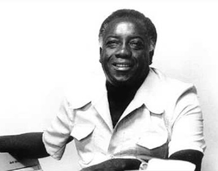
Tebas
Tebas
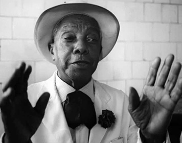
Cabide de Molambo
Cabide de Molambo

Luar do Sertão
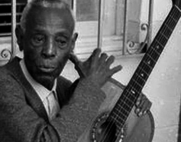
Pelo Telefone
Pelo Telefone
Recenseamento
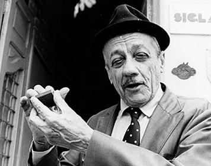
Despejo na favela
Despejo na favela
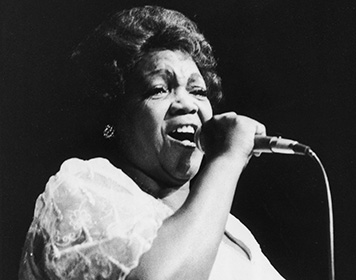
Sonho Meu
Sonho Meu
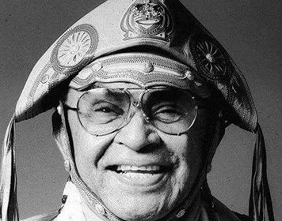
Sertão Sofredor
Sertão Sofredor
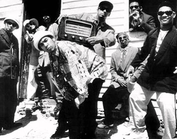
A Cidade
A Cidade
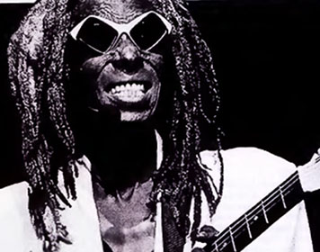
Tristes Trópicos
Tristes Trópicos
Apenas um rapaz latino americano
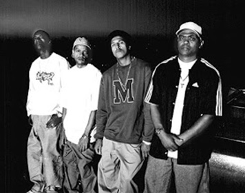
Nego Drama
Nego Drama
Não Existe Amor em SP
Vai de Madureira
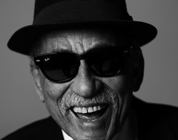
O dia em que o morro descer e não for carnaval
O dia em que o morro descer e não for carnaval
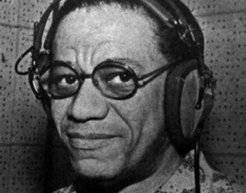
Zé Paraíba
Zé Paraíba
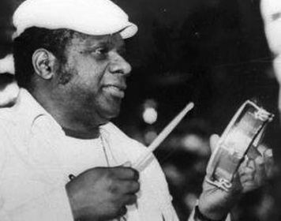
Ouro desça do seu trono/Mil réis
Ouro desça do seu trono/Mil réis
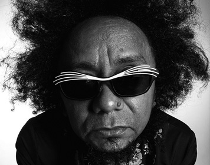
Mama África
Mama África
Candeeiro Encantado